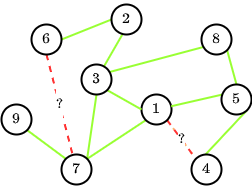

Integrating Transductive And Inductive Embeddings Improves Link Prediction Accuracy
$$ \newcommand{\nnbr}{\overline{\text{nbr}}}
\newcommand{\set}[1]{\left\{#1 \right\}}
\newcommand{\given}{\,|\,}
\newcommand{\nbr}{\text{nbr}}
\newcommand{\nnbr}{\overline{\text{nbr}}}
\newcommand{\viz}{\emph{viz.}}
\newcommand{\twitterf}{Twitter-1}
\newcommand{\twitters}{Twitter-2}
\newcommand{\twittert}{Twitter-3}
\newcommand{\google}{Google$+$}
\newcommand{\emb}{\texttt{emb}}
\newcommand{\new}[1]{\begingroup
\color{blue} #1 \endgroup}
\newcommand{\ie}{\textit{i.e.}}
\newcommand{\thetab}{\theta}
\newcommand{\hb}{\textbf{h}}
\newcommand{\Hb}{{\textbf{H}}}
\newcommand{\Pb}{{\textbf{P}}}
\newcommand{\kron}{\otimes}
\newcommand{\Kron}{\bigotimes}
\newcommand{\Scal}{\mathcal{S}}
\newcommand{\Area}{\omega_r}
\newcommand{\yb}{\textbf{y}}
\newcommand{\Acal}{\mathcal{A}}
\newcommand{\Ccal}{\mathcal{C}}
\newcommand{\Bcal}{\mathcal{B}}
\newcommand{\pb}{\textbf{p}}
\newcommand{\fb}{\textbf{f}}
\newcommand{\Rb}{\textbf{R}}
\newcommand{\Eb}{\textbf{E}}
\newcommand{\Wb}{\textbf{W}}
\newcommand{\Xcal}{\mathcal{X}}
\newcommand{\Gcal}{\mathcal{G}}
\newcommand{\Vcal}{\mathcal{V}}
\newcommand{\Ecal}{\mathcal{E}}
\newcommand{\Ical}{\mathcal{I}}
\newcommand{\Ncal}{\mathcal{N}}
\newcommand{\Rcal}{\mathcal{R}}
\newcommand{\Tcal}{\mathcal{T}}
\newcommand{\tb}{\textbf{t}}
\newcommand{\Mcal}{\mathcal{M}}
\newcommand{\xb}{\textbf{x}}
\newcommand{\lambdab}{\textbf{\lambda}}
\newcommand{\ab}{\textbf{a}}
\newcommand{\bb}{\textbf{b}}
\newcommand{\db}{\textbf{d}}
\newcommand{\qb}{\textbf{q}}
\newcommand{\zb}{\textbf{z}}
\newcommand{\Fcal}{\mathcal{F}}
\newcommand{\Ycal}{\mathcal{Y}}
\newcommand{\alphab}{\pmb{\alpha}}
$$
The performance of GNNs depends strongly on the input node features, whichin turn vary across networks. Selecting appropriate node features remains application-dependent and generally an open question. Moreover, owing to privacy and ethical issues, use of personalized node features is often restricted, resuling in many publicly available data from online social network (OSN) not having any node features(e.g., demography). In this work, we provide a comprehensive experimental analysis which shows that harnessing a transductive technique (e.g., Node2Vec) for obtaining initial node representations, from which an inductive node embedding technique (GNNs) takesover, leads to substantial improvements in link prediction (LP) accuracy in online social networks.
Salient features
- we provide a detailed experimental study where we depict a two step training procedure which is consistently more effective for LP task in OSN than introducing other types of ad-hoc proxy node features into GNNs.
-
The two step training procedure consist of
- Train one set of node embeddings which are agnostic to the graph neural network (GNN), using a transductive embedding model (eg Node2Vec, Matrix Factorisation) containing only structural information about a node.
- Feed these embedding vectors as input node features into an inductive model (GNNs), training it using an LP loss function, to obtain the final node embeddings.
- We perform a comparative analysis across five datasets and four GNN models, which reveal that for OSN, such a combination of transductive and inductive models consistently improves predictive performance, for all commonly-used LP loss functions.
Method
Notation
Given a graph $ G=(V,E) $, we denote $\nbr(u)$ and $\nnbr(u)$ as the neighbors and non-neighbors of $u$, respectively. In this context, note that $\nbr(u)$ also contains $u$, $\ie$, $\nbr(u)=\set{v\given (u,v)\in E}\cup \set{u}$, $\nnbr(u)=\set{v\neq u \given (u,v)\not\in E}$. Finally, we denote $y_{u,v}=1$ if $v\in \nbr(u)$ and $y_{u,v} = 0$, otherwise
Inductive Node Embeddings
Given a node $u$, intial node features $\zb_u$ and an integer $K$, a GNN takes the underlying graph $G=(V,E)$ and the initial node embeddings $\set{\zb_u \given u \in V }$ as input, and then computes inductive node embeddings $\set{\emb_u \given u \in V }$ by aggregating structural information from the nodes $k=1,2,...,K$ hop distances away from $u$ in the following iterative manner. \begin{align} &\xb_u(0) = \zb_u \label{eq:gnn-1}\\ & \xb_u(k) = F_{\theta}(\xb_v(k-1)\given v\in \nbr(u))\label{eq:gnn-2}\\ & \emb_u = G_{\theta} (\xb_u(k) \given k\in[K]) \label{eq:gnn-3} \end{align} The exact form of $F_{\theta}$ and $G_{\theta}$ varies across different GNN models.
For a downstream task such as LP, we compute the score between nodes $(u,v)$ as \begin{align} s_{\theta}(u,v) = H_{\theta}(\emb_u,\emb_v) \label{eq:score} \end{align} Here $H_{\theta}$ is another network that compares embeddings $\emb_u, \emb_v$ to arrive at a link score. We call this scheme `inductive' because, once $F_\theta, G_\theta, H_\theta$ are trained for a task, their induced model can be applied to a completely new graph in the same problem domain, to get meaningful node representations.
Transductive Node Embeddings
Our key noteworthy observation is that when graph features are used to $\textit{also}$ determine the initial $\set{\zb_u}$, the GNNs may behave better and lead to better end-task accuracy. We will now describe two ways in which how graph-based transductive methods can be used to obtain these initial node representations.
Node2Vec (N2V) Given a node $u$, Node2Vec first samples nodes $N_S(u)$ using different random walk based heuristics. Then it models the likelihood of the sampled nodes using a multinomial distribution on the proximity of the nodes, measured in terms of $\exp(\zb_u ^\top \zb_v)$. More specifically, we have: \begin{align} \text{Pr} (N_S (u)\given \zb_u ) = \prod_{v\in N_S(u)} \frac{\exp(\zb_u ^\top \zb_v)}{\sum_{w\in V}\exp(\zb_u ^\top \zb_w)} \end{align} Finally, the node embeddings $\zb_u$ are estimated by solving the following training problem. \begin{align} \max_{\set{\zb_u}} \sum_{u\in V} \left[ - \log\sum_{w\in V}\exp(\zb_u ^\top \zb_w) + \sum_{v\in N_S(u)}\zb_u ^\top \zb_v \right]\label{eq:node2vec} \end{align}
Combining inductive and transductive approaches
Once we train the transductive embeddings $\set{\zb_u}$ using Eq. \eqref{eq:node2vec}, we feed them into the GNN model \eqref{eq:gnn-1}--\eqref{eq:gnn-3} to learn $\emb_u$.
Training losses We learn the parameters $\theta$ used to parameterize Eqs.~\eqref{eq:gnn-2},~\eqref{eq:gnn-3} by minimizing a LP loss function. In this paper, we consider two different loss functions, $\ie$, binary cross entropy (BCE) loss and ranking loss, which are given as follows: BCE loss We compute the binary cross entropy loss as follows: \begin{align} \ell_{\text{BCE}}(\theta; G) &= -\sum_{(u,v) \in E} \log[ \text{sigmoid}(s_\theta {(u,v)})] -\sum_{(u,v)\not\in E}\log[1- \text{sigmoid}(s_\theta {(u,v)})] \end{align} Pairwise ranking loss We compute the pairwise ranking loss as follows: \begin{align} \ell_{\text{Rank}}(\theta; G) &= \sum_{u\in V}\sum_{\substack{w\not\in\nbr(u) \\ v\in \nbr(u)}} \text{ReLU}(s_{\theta}(w,u)-s_{\theta}(v,u)+\delta) \end{align} where $\delta$ is a tunable margin.
Results
Our experiments show that combining the strengths of transductive embeddings and inductive models give notable increment accuracy for LP task.Contacts
If you have any questions/suggestions, please contact Chitrank Gupta, Yash Jain, Abir De, and Soumen Chakrabarti.We use the website template from https://github.com/poole/hyde